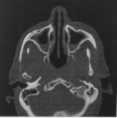
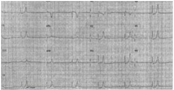

Questão 1 · Outros · 4000192594Em relação às síndromes coronarianas agudas (SCA), assinale a alternativa ERRADA:
A O ECG na avaliação dos pacientes é um ""divisor de águas"".
B O trombo associado à angina instável/infarto agudo do miocárdio sem supra de ST é vermelho e composto predominantemente de células sanguíneas, envolto em uma malha de fibrina, enquanto o trombo nos pacientes com infarto agudo do miocárdio com supra de ST é branco e composto principalmente de plaquetas.
C A dor da SCA geralmente é retroesternal, irradiando-se, frequentemente, para ambos os lados do tórax anterior, com predileção pelo lado esquerdo.
D O ECG está apto a nos auxiliar por demonstrar o tipo de lesão envolvida (trombo branco ou vermelho) e qual a artéria culpada.
E Os cinco principais mecanismos fisiopatológicos envolvidos nas SCA são: trombose, obstrução mecânica (placa aterosclerótica), obstrução dinâmica (espasmos), inflamação e aumento da demanda miocárdica (angina secundária).
Questão 2 · Outros · 4000192592Em relação ao derrame pleural, é correto afirmar:
A No derrame pleural parapneumônico exsudativo, está sempre indicada a drenagem do tórax do paciente.
B Um exsudato deve conter (1) uma proporção de proteína no líquido pleural em relação à proteína sérica maior que 0,5; (2) uma proporção de desidrogenase láctica (DHL) no líquido pleural em relação à DHL sérica maior que 0,6; ou (3) um nível de DHL no fluído pleural maior que dois terços do limite superior da normalidade. Quando todos os três critérios são atendidos, a sensibilidade, especificidade e o valor preditivo positivo excedem 98% para definir um derrame pleural exsudativo.
C Um nível de colesterol superior a 45 mg/dl é consistente com derrame pleural transudativo.
D Um derrame pleural parapneumônico com pH menor que 7,2 e glicose pleural menor que 60 mg/dl indica que é um derrame não complicado e, portanto, não precisa de drenagem torácica.
E Empiema tuberculoso ou efusão pleural tuberculosa são denominações da mesma situação fisiopatológica, na qual a tuberculose atinge o espaço pleural por disseminação hematogênica ou pelo sistema linfático.
Questão 3 · Outros · 4000192589Identi que abaixo as a rmativas verdadeiras (V) e as falsas (F) sobre diabetes mellitus tipo 2 (DM2) e infecção por COVID- 19. ( ) Pacientes com DM2 são mais propensos a internações em unidades de terapia intensiva e a tempo mais prolongado de internação em comparação com a população em geral. ( ) A infecção por COVID-19 parece preciptar manifestações graves de diabetes, incluindo cetoacidose diabética e estado hiperglicêmico hiperosmolar. ( ) Protocolos de insulina subcutânea devem ser evitados para tratar a hiperglicemia intrahospitalar durante a pandemia de COVID-19 devido à necessidade de limitar a frequência de contato direto da equipe com os pacientes. ( ) Dentre as alterações induzidas pela infecção por COVID-19 observam-se a resistência à insulina e consequentemente pior controle glicêmico. ( ) Os antidiabéticos orais devem ser descontinuados durante a internação hospitalar de pacientes com DM2 e infecção por COVID-19 devido ao maior risco de efeitos adversos associados ao seu uso. Assinale a alternativa que indica a sequência correta, de cima para baixo:
A FFVVF.
B FVFVF.
C VVFFV.
D VVFVV.
E VFVFV.
Questão 4 · Outros · 4000192586Em relação à GOTA, é correto afirmar:
A Independentemente do tempo de evolução, é uma doença que acomete uma única articulação, a exemplo da podagra.
B O diagnóstico é estabelecido através da identificação de cristais de urato no fluído articular ou tofos.
C Mais de 90% dos casos de gota primária acomete mulheres, usualmente acima de 30 anos de idade.
D Os níveis absolutos bem elevados do urato sérico são mais desencadeadores de crises de gota do que as flutuações séricas do ácido úrico.
E Na crise de gota, a analgesia deve ser realizada com antiinflamatórios.
Questão 5 · Outros · 4000192583Em relação à cirrose, assinale a alternativa ERRADA:
A Em adultos, a maioria das cirroses é consequência do uso abusivo de álcool ou de infecção crônica por vírus da hepatite B ou C.
B O conceito de cirrose é anatomopatológico, razão pela qual o diagnóstico de certeza deveria ser firmado por meio de biópsia hepática. Ademais, com frequência, pacientes com cirrose têm alterações da coagulação ou ascite, que limitam ou contraindicam realizar a biópsia.
C O tratamento de paciente com cirrose compensada objetiva manutenção de dieta balanceada, abstenção do álcool, detecção precoce de falência hepática, de retenção de líquidos ou de encefalopatia, além de prevenção de sangramento digestivo por varizes.
D O modelo matemático denominado MELD (Model for End-Stage Liver Disease) é uma ferramenta inadequada para predizer mortalidade.
E Apesar dos diferentes fatores prognósticos identificados em vários estudos, a classificação de Child e Turcotte, modificada por Pugh, ainda é uma maneira prática para predizer o prognóstico da hepatopatia.
Questão 6 · Outros · 4000192581Em relação ao Lúpus Eritematoso Sistêmico (LES), é correto afirmar:
A O diagnóstico de LES pode ser feito com razoável probabilidade, se pelo menos 5 dos 11 critérios de Classificação do Lúpus Eritematoso Sistêmico estiverem presentes.
B É comum estabelecer o diagnóstico de LES preenchendo 5 critérios da tabela de Classificação do LES, mesmo com o FAN (fator antinúcleo) negativo.
C As taxas de sobrevivência de dez anos estão em torno de 50%. Em um percentual pequeno dos pacientes, a doença segue um curso recidivante e remitente.
D Situações de gravidade no LES como glomerulonefrite, anemia hemolítica, miocardite, hemorragia alveolar, envolvimento do sistema nervoso central e trombocitopenia grave requerem tratamento com corticosteróides em altas doses por longos períodos (Ex.: meses).
E Nos últimos anos, a aterosclerose acelerada associada à inflamação crônica tornou-se uma das principais causas de morte.
Questão 7 · Outros · 4000192579Em relação aos CUIDADOS PALIATIVOS, é correto afirmar:
A O midazolam não deve ser usado em pacientes dispneicos ansiosos, porque promove rebaixamento do sistema nervoso central e piora da dispneia.
B Não há embasamento teórico para o uso do metilfenidato ou modafenila para o tratamento de fadiga no paciente oncológico.
C A morfina é a principal droga para o tratamento da dor forte; além de ser efetiva para o controle da dispneia.
D Os neurolépticos haloperidol ou risperidona devem ser drogas de escolha para o tratamento do delirium hiperativo.
E Como a constipação não é uma regra para os pacientes que estão recebendo opioides, não há necessidade da prescrição concomitante de laxantes (ex.: bisacodil e senna).
Questão 8 · Outros · 4000192577Sobre a Síndrome Hepatorrenal (SHR), assinale a alternativa ERRADA:
A É diagnosticada por exclusão de outras causas de insuficiência renal.
B Embora de natureza funcional, a SHR está associada ao mau prognóstico, sendo o transplante hepático o único tratamento eficaz. O emprego de vasoconstrictores, como terlipressina e noreprinefina, tem mostrado melhora na função renal em aproximadamente 2/3 dos pacientes com SHR.
C Em fases mais avançadas da doença, os pacientes ficam incapazes de excretar água livre, desenvolvendo sua retenção, hiponatremiadilucional e hipoosmolaridade.
D O tratamento clínico da SHR é eficaz e o prognóstico é bom.
E A síndrome hepatorrenal tipo 1 é tipicamente associada, pelo menos, à duplicação da creatinina sérica, para um nível superior a 2,5 mg/dl ou pela redução da depuração da creatinina.
Questão 9 · Outros · 4000192574Em relação às pneumonias, é correto afirmar:
A A amostra de escarro para GRAM com mais de 10 neutrófilos e menos de 25 células epiteliais escamosas, em um campo de pequeno aumento no microscópio, é representativa para o diagnóstico etiológico da pneumonia.
B A pneumonia adquirida na comunidade (PAC) ocorre fora do hospital ou dentro de 72 horas da admissão hospitalar em um paciente não residente em um estabelecimento de cuidados de longa permanência.
C Demência, AVC ou rebaixamento do nível de consciência são fatores epidemiologicamente possíveis para a PAC poragentes aeróbios ou bactérias grampositivas entéricas.
D Os microrganismos anaeróbios são uma causa significativa, quando um episódio de aspiração ocorreu dias a semanas antes da apresentação da pneumonia.
E A presença de confusão mental indica, obrigatoriamente, uma pneumonia grave, independentemente da idade do indivíduo acometido.
Questão 10 · Outros · 4000192571Em relação à tuberculose, é correto afirmar:
A A demonstração de bacilos álcool ácidos resistentes no esfregaço de escarro nem sempre estabelece o diagnóstico de M. tuberculosis.
B As hemoculturas positivas para M. tuberculosis são comuns em pacientes com contagens normais de células CD4.
C O surgimento de Mycobacterium tuberculosis com resistência aos antimicrobianos é a principal causa de falha terapêutica na tuberculose.
D A terapia com corticosteroides demonstra ser útil para prevenir a pericardite constrictiva da pericardite tuberculosa, mas não tem utilidade para reduzir complicações neurológicas da meningite tuberculosa.
E A taxa de recaída da tuberculose está em torno 20% mesmo com a completa adesão ao tratamento.
Questão 11 · Outros · 4000192568Em relação às anemias, assinale a alternativa ERRADA:
A Neutrófilos hipersegmentados e rouleaux eritrocitário são encontrados na anemia megaloblástica e, dificilmente, no mieloma múltiplo.
B A anemia por doença crônica tem o diagnóstico baseado na presença de anemia normocítica, podendo ser microcítica, ao hemograma simples; ferro sérico e saturação de transferrina normais ou baixos com ferritina elevada.
C Pacientes alcoólatras, gastrectomizados ou portadores de desnutrição grave podem ter anemia normocítica, pois a presença da deficiência de ferro, concomitantemente às deficiências de ácido fólico e/ou vitamina B12 podem gerar essa condição.
D Independentemente do tipo de anemia hemolítica, o diagnóstico inicial fundamentase na presença de destruição celular (aumento dos níveis de DHL), aumento do catabolismo de hemoglobina (elevação dos níveis de bilirrubina indireta), diminuição da haptoglobina e no esforço regenerativo celular (reticulocitose e hiperplasia eritroide).
E A ferritina sérica é um dos parâmetros de avaliação da anemia ferropriva, mas ela pode estar elevada na presença de lesão hepática, infecções, neoplasias e doenças crônicas.
Questão 12 · Outros · 4000192566Joana, 34 anos de idade dá entrada no Pronto-Socorro com história de cefaleia, febre e confusão mental há 3 dias, associada a episódios em que permanecia parada, olhar xo e movimentos oromastigatórios automáticos, com duração de 2 minutos. Ao exame clínico estava confusa, febril, com rigidez de nuca, sem outros sinais localizatórios. A tomogra a de crânio mostrava hipoatenuação discreta e edema em lobo temporal à direita. O eletroencefalograma mostrava atividade periódica lateralizada. Qual é a principal hipótese diagnóstica e o exame confirmatório?
A Meningite bacteriana, sorolorigia por látex.
B Encefalite ímuno mediada, solicitar anticorpos anti-NMDA no líquor.
C Encefalite herpética, PCR para herpes vírus no líquor.
D Endocardite bacteriana com embolização séptica, hemocultura e ecocardiograma.
E Neurotoxoplasmose, ressonância nuclear magnética de crânio.
Questão 13 · Outros · 4000192564Joaquim 26 anos de idade apresenta há 2 anos cefaleia uma vez por semana de forte intensidade, unilateral, pulsátil, com foto e fonofobia e acompanhada por náuseas. Nega fenômenos visuais ou somestésicos. Há 6 meses associou outro tipo de cefaleia quase diariamente, bilateral, de fraca a moderada intensidade, em aperto, sem outros sintomas. Faz uso diário de dipirona e cetoprofeno e nos momentos de exacerbação da dor usa sumatriptano. Quais são os diagnósticos desse paciente?
A Cefaleia tensional e cefaleia por uso abuso de medicação.
B Cefaleia tensional e enxaqueca com aura.
C Enxaqueca com aura e cefaleia por abuso de medicações.
D Cefaleia tensional e enxaqueca sem aura.
E Enxaqueca sem aura e cefaleia por abuso de medicações.
Questão 14 · Outros · 4000192562Sobre a Doença Pulmonar Obstrutiva Crônica (DPOC), assinale a alternativa ERRADA:
A A espirometria deve ser o principal elemento para o diagnóstico, tratamento e orientação quanto à evolução da DPOC.
B O principal diagnóstico diferencial é o da asma brônquica.
C Os pacientes de todos os grupos de gravidade da DPOC beneficiam-se da reabilitação pulmonar.
D A oxigenioterapia é a medida mais eficaz no tratamento e na prevenção de hipertensão pulmonar e cor pulmonale, pois diminui a vasoconstricção hipóxica.
E Os achados do exame físico facilmente identificam a DPOC, mesmo antes de o paciente apresentar o tórax hiperinsuflado, tempo expiratório prolongado, respiração em lábios semicerrados, utilização de musculatura acessória do pescoço.
Questão 15 · Outros · 4000192560Humberto, 82 anos de idade, acamado há 10 anos por demência vascular após episódio de AVC isquêmico extenso. E totalmente dependente para as atividades básicas da vida diária e não contactua com as pessoas há cerca de 1 ano. E cuidado pela lha. Há 2 anos apresenta disfagia para sólidos e há 6 meses para líquidos. Comparece a Emergência com história de queda do estado geral e recusa da alimentação via oral há 3 dias. No atendimento inicial, apresentava-se em mau estado geral, descorado ++/4+, desidratado +++/+4, com roncos de transmissão, FR 30 irpm, oximetria sem captura, com respiração ruidosa, extremidades frias e mal perfundidas, FC 130 bpm e PA 72 x 40 mmHg. A equipe da sala de emergência aborda a lha sobre a compreensão do quadro atual e ela entende que o pai está próximo ao nal da vida e não deseja que ele sofra, mas está muito preocupada por ele não estar conseguindo comer. Qual é a conduta com relação à alimentação nesta fase?
A Manter o paciente de jejum e sem soro.
B Passar sonda nasoenteral para alimentação enteral.
C Pegar acesso periférico e iniciar nutrição parenteral.
D Introduzir soro de expansão e manutenção.
E Introduzir dieta assistida por via oral.
Questão 16 · Transtorno do Humor Bipolar THB · Transtorno do Humor Bipolar Tipo 1 · 4000192559Mulher de 20 anos de idade chega ao serviço de emergência informando ter sido agredida por pessoa no ônibus. O contato inicial é difícil, pois a paciente está agitada, preocupada e falando rapidamente. Ela informa que o agressor a estava perseguindo desde o ponto de embarque. A paciente recebeu notícia sobre uma herança há quatro dias, e desde então não consegue dormir. Há três dias, pediu demissão do emprego de faxineira por achar que sua "patroa estava roubando seu dinheiro para pagar contas da casa". Nos últimos dois dias, com a expectativa de receber o dinheiro, gastou cerca de 2 mil reais em vários pares de sapatos de 3 lojas diferentes. Qual é a principal hipótese diagnóstica para o caso?
A Transtorno de personalidade borderline.
B Reação aguda ao estresse.
C Síndrome do pânico.
D Mania com sintomas psicóticos.
E Transtorno conversivo.
Questão 17 · Outros · 4000192558Em relação à tuberculose, assinale a alternativa ERRADA:
A Há um aumento da ocorrência de tuberculose entre os indivíduos HIV-positivos.
B As culturas de líquido pleural são positivas para M. tuberculosis em mais de 60% dos casos de tuberculose pleural.
C O paciente com tuberculose pulmonar tipicamente apresenta sintomas constitucionais de mal-estar, anorexia, perda de peso, febre e sudorese noturna lentamente progressivos. A tosse crônica é o sintoma pulmonar mais comum.
D A demonstração de bacilos álcool-ácido resistentes no esfregaço de escarro não estabelece o diagnóstico de M. tuberculesis, uma vez que as micobactérias não tuberculosas podem colonizar as vias aéreas e são cada vez mais reconhecidas como causadoras de doença clínica em pacientes com doença pulmonar estrutural subjacente.
E Indivíduos com tuberculose latente não têm.
Questão 18 · Outros · 4000192557Sobre a Síndrome de Cushing, assinale a alternativa ERRADA:
A A atrofia muscular provoca fraqueza, com dificuldade em se levantar de uma posição sentada ou subir escadas.
B Os pacientes podem ter sede e poliúria (com ou sem glicosúria), cálculos renais, glaucoma, estrias roxas (especialmente ao redor das coxas, mamas e abdome) e facilidade de contusões.
C Os pacientes são suscetíveis a infecções oportunistas.
D Pacientes alcoolistas podem apresentar hipercortisolismo e muitas manifestações clínicas da síndrome de Cushing.
E Os pacientes devem receber tratamento para comorbidades dependentes de cortisol, incluindo osteomalácia, distúrbios psiquiátricos, diabetes mellitus, hipertensão, hipercalemia e infecções.
Questão 19 · Outros · 4000192556Gioconda de 34 anos de idade deu entrada no Pronto-Socorro com cefaleia e febre não medida há 5 dias. Tentou utilizar vários analgésicos sem melhora. No exame clínico apresenta T 38ºC, FC 100 bpm, sem outras alterações. Foi realizada a tomografia computadorizada mostrada a seguir. Qual é o diagnóstico?

A Meningoencefalite.
B Normal para a idade.
C Rinite atópica.
D Osteomielite.
E Sinusite.
Questão 20 · Outros · 4000192555Mulher de 66 anos de idade, diabética e hipertensa, em uso de enalapril e metformina, comparece a consulta ambulatorial com queixa de astenia e turvação visual há 2 dias. É encaminhada ao Departamento de Emergência após realizar o seguinte eletrocardiograma. Qual deve ser a conduta imediata?

A Gluconato de cálcio.
B Atropina.
C Marcapasso transcutâneo.
D Trombólise.
E Encaminhar para marcapasso definitivo.
Questão 21 · Outros · 4000192554Um pediatra recebe, em seu consultório, um menino, 4 anos, com história de disúria, urina escura e febre há 2 dias. Tentando ajudar na sua hipótese diagnóstica, solicita um sumário de urina, que evidencia: pH 6, densidade 1030, nitrito positivo, leucoesterase 3+, leucócitos > 100 p/c e hemácias 30 p/c. Ao receber a prescrição do antibiótico, a mãe relata que a criança "vive tomando antibiótico pro xixi", sempre tem muita di culdade para urinar e se espreme muito "para mijar". Tentando entender melhor o caso, o pediatra interroga a mãe e descobre que, durante o pré-natal, uma USG obstétrica mostrou dilatação pielocalicial bilateral com bexiga distendida e oligoâmnio. De acordo com o caso clínico, a principal hipótese diagnóstica é:
A Estenose de junção ureterovesical bilateral.
B Estenose de junção ureteropiélica bilateral.
C Refluxo vesicoureteral bilateral.
D Estenose ureteral unilateral.
E Válvula de uretra posterior.
Questão 22 · Outros · 4000192553Mãe chega ao consultório médico preocupada por suspeitar que seu lho, adolescente de 12 anos, seja magro demais, além de perceber que ele é menor do que os colegas da escola. A partir da avaliação nutricional, considerando o referencial OMS 2007, foram observados os seguintes resultados para os índices antropométricos em escore Z: estatura para idade (E/I) = - 1,8DP e Indice de Massa Corpórea para a Idade (IMC/I) = - 2,1DP. Considerando esses dados, o adolescente tem
A baixa estatura para idade e magreza acentuada.
B estatura adequada para idade e magreza.
C estatura adequada para idade e magreza acentuada.
D muito baixa estatura para idade e peso adequado para idade.
E muito baixa estatura para idade e magreza.
Questão 23 · Outros · 4000192552Pais compareceram, com o seu lho de 10 dias de vida, para a primeira consulta pediátrica. Ao nascimento, seu peso foi 3.100 g e, no momento, está em aleitamento materno exclusivo. Durante a consulta, o pediatra observa que a técnica de amamentação está correta, o RN tem exame físico normal e o seu peso atual é de 3.130 g. Nesse caso, a melhor orientação pediátrica será manter a:
A Amamentação exclusiva, pois o peso está adequado .
B Amamentação e complementar com leite ordenhado.
C Amamentação exclusiva e investigar infecção do trato urinário.
D Suspender a amamentação e iniciar formula de partida.
E Amamentação e complementar com fórmula de partida.
Questão 24 · Outros · 4000192551João tem 1 ano e acordou com as mãos com edema e dolorosas. Sua mãe não observou exposição a nenhuma substância ou alimento estranhos no dia anterior. Ao ser atendido no pronto-socorro, fez exames que mostraram: Hemograma com Ht 7.0 %, VCM 80 fl, Leucócitos 13,500/mm³, Plaquetas 550.000/mm³, reticulocitos 6 %. Diante desse caso, o diagnóstico é
A hemoglobinopatia C
B anemia falciforme.
C esferocitose.
D talassemia.
E anemia auto-imuni
Questão 25 · Outros · 4000192550A mastite é uma complicação durante a alimentação com leite materno exclusivo. Qual a conduta mais adequada de tratamento, a ser realizada em casos de mastite infecciosa:
A Iniciar antibioticoterapia sempre desde o início dos sintomas.
B Em caso de dor intensa, suspender amamentação na mama comprometida, ordenhar o leite e oferecer ao lactente sadio.
C O Strepcocos pyogenes é o agente etiológico mais comum nesses casos. Iniciar Penicilina.
D A oxacilina é a droga de escolha para o tratamento de casos leves.
E O uso de Lactobacillus fermentum não é alternativa eficiente ao uso de antibióticos.
Questão 26 · Outros · 4000192549Criança de oito anos de idade, atópica, pais atópicos, portadora de asma em tratamento com uso de monlukast 4 mg diariamente, corticoide inalatório em dose baixa, salbutamol diário, 200 mcg a cada 6h, via inalatória e orientação de controle ambiental com adesão correta ao tratamento, evolui com manutenção do quadro de sibilância, restrição moderada de atividades rotineiras e sem crises noturnas. Qual a conduta de escolha para manutenção mais adequada para o caso?
A Manter a medicação e aguardar a evolução.
B Iniciar broncodilatador B2 agonista de longa ação.
C Aumentar o corticosteroide inalatório para doses moderadas.
D Aumentar a dosagem do corticosteroide para dose máxima.
E Iniciar teolfilia oral.
Questão 27 · Outros · 4000192548Paciente de dez anos de idade apresenta, de forma aguda, febre, cefaleia, irritabilidade e, após três dias de evolução em domicílio, apresenta melhora clínica leve. Após 48h da melhora clínica, é levado ao pronto atendimento onde dá entrada para internação com crises convulsivas generalizadas. O líquor apresentou hiperproteinorraquia, pleocitose com 80% de linfócitos e hipoglicorradia leve com glicemia normal. A tomogra a de crânio demonstra anormalidades focais temporais. Na impossibilidade de realizar eletroencefalograma, com base na etiologia mais provável para o caso, o tratamento inicial a ser adotado deve ser
A Penicilina cristalina 200.000 UI/kg/dia.
B Ceftriexona 50 mg/kg/dia.
C Aciclovir 30 mg/kg/dia.
D Ganciglovir 10 mg/kg/dia.
E Vancomicina 40 mg/kg/dia + ceftriexona 50 mg/kg/dia.
Questão 28 · Outros · 4000192547Considerando recém-nascido com sepse neonatal precoce, Rodwell maior que 3, assinale a assertiva que apresenta os principais agentes etiológicos e o tratamento inicial indicado, respectivamente:
A Streptococos B e E. coli. Penicilina cristalina e aminoglicosídeo.
B Stafilococos aureus e Candida. Oxacilina e anfotericina B.
C Streptococos B e E. coli. Penicilina cristalina e ceftriexona.
D Stafilococose e Klebsiella. Penicilina cristalina e cefepime.
E E, coli e Listeria monocytogenes. Aminoglicosídeo e eritromicina.
Questão 29 · Outros · 4000192546Iago, 2 meses de idade, nasceu com atresia duodenal, está internada desde o nascimento. Neste período de 2 meses, foi submetido a abordagem cirúrgica, recebeu nutrição parenteral e desenvolveu infecção de cateter central tratada com sucesso. Encontra-se agora em condições clínicas de transição para dieta oral. Como ainda não tem previsão de alta hospitalar, a equipe deseja manter a vacinação atualizada durante a internação. A criança já recebeu as vacinas de BCG e hepatite B ao nascimento. Quais são as vacinas indicadas neste momento considerando o Programa Nacional de Imunizações (PNI) e os dados clínicos fornecidos?
A Pneumocócica 10 valente, pentavalente (DPT, hepatite B e hemófilos B) e inativada de poliomielite (VIP).
B Pneumocócica 10 valente, meningocócica C, rotavírus e palivizumabe.
C Pneumocócica 10 valente, tetravalente (DPT e hemófilos B), inativada de poliomielite (VIP) e rotavírus.
D Pneumocócica 10 valente, inativada de poliomielite (VIP) e rotavírus.
E Pneumocócica 10 valente, pentavalente (DPT, hepatite B e hemófilos B).
Questão 30 · Outros · 4000192545Paciente de 12 anos de idade, previamente hígido, após excursão em área de mata para acampamento de escoteirismo, apresenta febre intensa, três dias de evolução, prurido cutâneo leve, poliartrite, com edema de mãos e pés, mialgia e exantema inespecífico. Com base nos dados citados, o diagnóstico mais provável e a evolução possível são:
A Zika e evolução para cronicidade.
B Dengue com evolução para dengue hemorrágica.
C Chikungunya e evolução para cronicidade.
D Zika sem risco de evolução para cronicidade.
E Chikungunya com risco de hemoconcentração.
Questão 31 · Outros · 4000192544Considerando uma criança menor, com anemia falciforme, assinale a assertiva que NÃO apresenta as complicações mais comuns:
A Aplasia medular, crise hemolítica e priapismo.
B Ulcerações em pernas, aumento súbito do baço e choque circulatório.
C Crise hemolítica, priapismo e síndrome torácica aguda.
D Crise hemolítica, fronte olímpica e AVC hemorrágico.
E AVC isquêmico, infecção por germes capsulados e crises álgicas.
Questão 32 · Outros · 4000192543Ana teve seu primeiro lho há 5 dias; um recém-nascido do sexo masculino, a termo, com peso e comprimento dentro da normalidade. A mesma apresentou lesões vesiculares na comissura labial hoje, sem outras queixas até o momento. A conduta recomendada quanto ao aleitamento materno é:
A Contraindicar o aleitamento materno temporariamente, oferecer fórmula láctea e isolar o recém-nascido de sua mãe até a fase de crostas.
B Manter o aleitamento materno ao seio, com lavagem de mãos, uso de máscara e proteção das lesões do contato direto com o recém-nascido.
C Orientar leite materno ordenhado, isolar o neonato de sua mãe até a fase de crostas e administrar aciclovir ao recémnascido.
D Prescrever leite humano pasteurizado de banco de leite e isolar o recém-nascido de sua mãe até a fase de crostas.
E Manter o aleitamento materno ao seio, com lavagem de mãos, uso de máscara e proteção das lesões do contato direto com o recém-nascido e administrar VZIG ao mesmo.
Questão 33 · Outros · 4000192542Janaína, primigesta, procura o posto de saúde porque está apresentando, ao amamentar, "dor no bico do peito" desde a segunda semana pós-parto. No exame da mama, o pediatra identifica fissura mamilar. A conduta mais importante neste caso é:
A Avaliar a mamada e corrigir a técnica de amamentar.
B Passar o próprio leite nos mamilos após as mamadas e secar ao ar livre.
C Amamentar na mesma posição.
D Usar, na aréola e nos mamilos, produtos (cremes ou pomadas) cicatrizantes.
E Manter os mamilos secos, trocando com frequência os forros absorventes usados.
Questão 34 · Outros · 4000192541Adolescente de 16 anos sofreu um ferimento penetrante por arma branca na região central do abdômen. Exame físico: confusão mental, FC: 152bpm, FR: 28irpm, PA: 80X50 mmHg, abdômen "em tábua", não permitindo a palpação. As vias aéreas foram estabilizadas, estabelecido aporte de oxigênio e realizada expansão volêmica. A tomogra a computadorizada evidenciou líquido na cavidade abdominal. A conduta imediata é:
A Laparotomia exploradora.
B Endoscopia digestiva alta.
C Punção venosa central para monitorar a PVC.
D Punção do líquido abdominal com agulha grossa.
E Antibioticoterapia intravenosa de amplo espectro.
Questão 35 · Outros · 4000192540Recém-nascido a termo, do sexo feminino, nascido de parto vaginal, apresentou linfedema no dorso dos pés e das mãos e ausência de pulsos nos membros inferiores. Realizado ecocardiograma compatível com coarctação da aorta. Não foram identi cadas outras anomalias e nem desproporções corporais. Dados antropométricos: peso: 2.900g. comprimento: 44cm e PC: 33cm. O diagnóstico mais provável é:
A Síndrome de Prader-Willi.
B Síndrome de Patau.
C Síndrome de Down.
D Síndrome de Turner.
E Síndrome de Noonan.
Questão 36 · Outros · 4000192539Joaquim, 11 meses, é trazido à consulta e, segundo a mãe, não está fazendo as mesmas coisas que as outras crianças da sua idade. Ainda não caminha, balbucia, mas não diz nenhuma palavra, além de "mama" e "papa". Apresenta uma boa interação social com a mãe, se interessa pelos brinquedos que são colocados ao seu alcance e campo visual. Senta com apoio, engatinha pouco e, por poucos segundos, consegue car em pé, apoiado. História pregressa: nasceu pré-termo de 35 semanas de gestação, pesando 2.230g. Não apresentou intercorrências no período perinatal e iniciou o aleitamento materno nas primeiras 24h de vida. A orientação adequada, nesse caso, é:
A Encaminhar para avaliação neurológica com investigação de imagem e eletroencefalograma.
B Investigar audição, encaminhar ao neurologista e iniciar tratamento fonoaudiológico imediato.
C Iniciar intervenção com fisioterapia e terapia ocupacional, duas vezes na semana, e fazer revisão em um mês.
D Investigar audição e transtorno do espectro autista, iniciar tratamento fonoaudiológico e terapia ocupacional.
E Considerar defasagem normal dentro dos padrões esperados se corrigida a idade gestacional e reavaliar em um mês.
Questão 37 · Transtorno do Déf icit de Atenção e Hiperatividade TDAH · 4000192538José, 11 anos, vem à consulta com o pediatra por di culdades de relacionamento social na família e na escola. Mostra um desempenho escolar errático com alguns bons resultados mesclados com resultados ruins. A família recebe bilhetes da escola, quase diariamente, com queixas de que o paciente atrapalha o andamento da aula com piadas, conversas ou discussões. Segundo a mãe, o lho é bastante inteligente, mas vem deteriorando o seu desempenho ao longo dos anos com piora acentuada nas últimas séries do ensino fundamental. Não consegue se concentrar nos trabalhos e termina as tarefas muito rápido, com uma qualidade baixa. Frequentemente, perde o material necessário para fazer as lições de casa. De acordo com a família, isso sempre aconteceu, mas nos últimos anos os sintomas têm ficado mais significativos. Com base nessa história, o diagnóstico mais provável é:
A Transtorno do déficit de atenção e hiperatividade.
B Transtorno opositor-desafiador.
C Transtorno de humor bipolar.
D Distúrbio de conduta.
E Distimia.
Questão 38 · Outros · 4000192537Pré-escolar, sexo masculino, 4 anos, com história de anemia não responsiva ao sulfato ferroso na dose de 5mg/kg/dia, administrado durante seis meses, meia hora antes das refeições com suco de frutas cítricas. Antecedentes pessoais sem intercorrências. A mãe teve anemia na infância e fez vários tratamentos. História nutricional: leite materno exclusivo até o sexto mês de vida. Atualmente come arroz, feijão, frutas, carne (quatro vezes por semana) e leite integral (três vezes ao dia). Exame físico: paciente pálido, sem outras alterações. Hemograma: Hm: 6.000.000/mm³; Hb: 10,2g/dL; Ht: 30%; VCM: 50fL; HCM: 16pg; CHCM: 22%; RDW: 12%; morfologia da série vermelha: hipocromia e microcitose; leucometria: 7.600/mm³ (eos: 2%, basó los: 0%, bastões: 2%, seg 36%, linf:58%, mon: 2%) e plaquetas: 300.000/mm³; reticulócitos: 1,5%. Para confirmar a hipótese diagnóstica mais provável, o exame a ser solicitado é:
A Ferritina.
B Mielograma.
C Eletroforese de hemoglobina.
D Curva de fragilidade osmótica.
E Índice de saturação de transferrina.
Questão 39 · Outros · 4000192536Lactente de 40 dias é levado ao pronto-socorro com história de febre de 39ºC há 36 horas e recusa alimentar. Encontra-se em regular estado geral, hiperemia timpânica à direita, frequência cardíaca em torno 120bpm e ausculta pulmonar normal. A melhor conduta é:
A Colher hemocultura e aplicar ceftriaxona IM ambulatorialmente.
B Internar, investigar e iniciar antibioticoterapia.
C Liberar e tratar otite média aguda com amoxicilina.
D Liberar e orientar para retornar em 24 horas.
E Colher urocultura e iniciar cefalexina oral.
Questão 40 · Outros · 4000192535Em relação à etiopatogenia do diabetes mellitus tipo 1, qual dos fatores abaixo NÃO está relacionado ao desenvolvimento da doença?
A Alterações em genes localizados na região HLA do complexo de histocompatibilidade principal (MHC).
B Fatores relacionados à alimentação.
C História familiar positiva de diabetes.
D Infecções virais (coksakie A, rubéola, citomegalovirus, Epstein-Barr).
E Autoimunidade.
Questão 41 · Outros · 4000192534A violência sexual contra as mulheres é uma realidade, e os serviços de saúde, assim como seus pro ssionais, devem estar preparados para esse acolhimento e atendimento adequado. Em relação ao atendimento à vítima de estupro nos serviços de saúde.
A É prioritário a realização do exame pericial e colheita de material para identificação do agressor, para tanto a paciente não deve ser atendida em serviços não especializados devendo encaminhada para centro de referência.
B O serviço de saúde não precisa ser especializado, pois a coleta de material da vítima para identificação do agressor não é obrigatória, mas pode servir de prova para a justiça.
C O hospital que possui serviço de saúde especializado deve realizar exame de corpo de delito durante o próprio atendimento médico, evitando que a vítima tenha que se deslocar ao IML.
D O exame de corpo de delito deve ser solicitado pelo médico de plantão do hospital se a vítima ainda não tiver ido ao IML.
E O exame de médico não perito ou legista não tem qualquer valor para a justiça, e, portanto, o atendimento hospitalar só deve ocorrer após o exame pericial.
Questão 42 · Outros · 4000192533Em uma consulta de pré-natal, geralmente, o motivo da consulta é a gravidez. No entanto, o atendimento deverá ser conduzido de forma a deixar a paciente á vontade para relatar e perguntar o que desejar. Ao médico, cabe esclarecer dúvidas, alertar sobre riscos e procurar dar os diagnósticos de possíveis intercorrências na gravidez como também tratamento adequado das doenças no ciclo gravídico. Considerando as infecções durante a gestação,
A o tratamento da bacteriúria assintomática não está relacionado com a redução da incidência de rotura prematura de membranas fetais ou com o trabalho de parto prematuro. Na verdade, esse tratamento está relacionado com o quadro de infecção urinária.
B as gestantes com infecção ativa por herpes genital, na ocasião do parto, não têm indicação de resolução por cesariana.
C os derivados imidazólicos, como também as nistatinas, não devem ser prescritos para o tratamento da candidíase.
D o tratamento da sífilis é realizado com penicilina benzatina. As pacientes alérgicas deverão ser encaminhadas para dessensibilização em centro de referência terciária. Existem outras opções terapêuticas caso não seja possível o encaminhamento para o centro de referência.
E Não é recomendado indicar a imunização durante o segundo trimestre gestacional, sendo recomendado no primeiro e terceiro.
Questão 43 · Outros · 4000192532No acompanhamento do puerpério, durante o aleitamento materno, o contraceptivo hormonal, deverá conter
A somente progestágenos enquanto durar o aleitamento, não importando o período.
B somente estrógenos.
C pílulas combinadas de estrógenos e progestágenos com ultrabaixa dose..
D não é indicado o uso de contraceptivo hormonal no aleitamento.
E contraceptivos hormonais de qualquer composição, durante o período de amamentação.
Questão 44 · Outros · 4000192510Paciente primigesta, 8 semanas de gestação, vem para primeira consulta de pré-natal e apresenta glicemia de jejum de 96 m/dL. De acordo com o consenso Rastreamento e diagnóstico de diabetes mellitus gestacional no Brasil, de 2017, a paciente
A tem rastreio positivo para diabetes gestacional, devendo realizar imediatamente o teste oral de tolerância à glicose. Em caso de teste oral positivo, o seguimento dessa patologia deve ser realizado por meio de glicemia capilar.
B já tem diagnóstico de diabetes gestacional, sendo necessário, para seguimento dessa patologia, o perfil glicêmico por meio de glicemia capilar.
C tem rastreio positivo para diabetes gestacional, devendo realizar imediatamente o teste oral de tolerância à glicose. Em caso de teste oral positivo, o seguimento dessa patologia deve ser realizado por meio de glicemia capilar.
D tem rastreio positivo para diabetes gestacional, devendo realizar o teste oral de tolerância à glicose entre 24 a 28 semanas. Em caso de teste oral positivo, o seguimento dessa patologia deve ser realizado por meio de glicemia capilar.
E Nenhuma das anteriores.
Questão 45 · Outros · 4000192509Sabe-se que o mecanismo de parto é o conjunto de movimentos ativos e, principalmente, passivos do feto durante sua passagem pelo canal vaginal. A estática in uencia diretamente em como se dará esse fenômeno e, consequentemente, seu desfecho. Por isso, é imprescindível que o médico obstetra e o generalista conheçam esse mecanismo. No trabalho de parto, na apresentação:
A Pélvica incompleta, também denominada pelvipodálica, as coxas e as pernas estão fletidas.
B Facial, o ponto de referência fetal é o bregma.
C Bregmática, a linha de orientação é a sutura metópica.
D Defletida de 2º grau, o ponto de referência fetal é a glabela.
E Nenhuma das anteriores.
Questão 46 · Outros · 4000192508Mulher de 27 anos apresenta amenorreia há 4 meses, sem outras queixas. Refere menarca aos 14 anos, com ciclos regulares até um ano atrás, quando os intervalos começaram a car mais longos. Nunca engravidou. Pratica atividade física diária intensa (corrida, musculação e ciclismo). Ao exame físico, não foram constatadas alterações. Na investigação diagnóstica, apresentou os seguintes resultados: dosagem de prolactina normal; Beta-HCG sérico negativo; FSH e LH séricos diminuídos: estrogênio sérico diminuído: níveis séricos de androgênios normais; ressonância nuclear magnética de crânio normal; ultrassonogra a pélvica transvaginal com útero em anteverso exão com miométrio homogêneo, volume de 80 cm³, eco endometrial 3 mm, ovário D com volume de 3 cm³, ovário E com volume de 3 cm³. Diante do quadro exposto, a paciente apresenta
A hipogonadismo hipergonadotrófico.
B síndrome de Sheehan.
C síndrome dos ovários policísticos.
D hipotiroidismo.
E hipogonadismo hipogonadotrófico.
Questão 47 · Outros · 4000192507Sobre as infecções mais frequentes e respectivas condutas a serem tomadas, é correto afirmar, EXCETO:
A TOXOPLAMOSE, IgG e IgM negativos. Sucetivel. Fazer orientações higienodietéticas: evitar contaro com gatos, em especial com suas fezes; não ingerir ovos e carnes cruas; lavar as verduras de forma adequada; usar luvas nas atividades de jardinagem.
B Tétano. Caso a paciente nunca tenha sido imunizada, realizar imunização completa prévia à gestação futura (três doses). Se já for imunizada e recebeu reforço nos últimos dez anos, orientar profilaxia. Se já for imunizada e recebeu reforço há mais de dez anos, administrar dose de reforço e orientar profilaxia.
C Toxoplasmose. IgG positivo e IgM negativo. Imune.
D Sífilis. Reagente. Investigar parceiro. Reagente. Investigar parceiro. Realizar o tratamento completo prévio à gravidez.
E Febre amarela. Habitantes de áreas de doença endêmica devem receber vacinação a cada 10 anos. Vacinar e liberar para engravidar após a vacinação.
Questão 48 · Outros · 4000192506Sobre as fases clínicas do parto, é correto afirmar, EXCETO:
A A dilatação cervical, primeiro período da estimulação, é representada por uma curva sigmoide dividida em fase latente e fase ativa. A primeira dura 8h em média e a segunda, em torno 6h nas primiparas, com velocidade de dilatação de aproximadamente 1,2 cm/h e 3 h nas multiparas, com velocidade de dilatação de 1,5cm/h.
B O segundo período da estimulação (expulsão) tem inicio com a dilatação. Este período se encerra com a dilatação completa.
C A dequitação (terceiro período da estimulação, secundamento ou dequitadura) representa o descolamento e a saída da placenta após o nascimento do recém-nascido.
D O descolamento da placenta pode ser central (Baudelocque-Schultze) ou marginal (Baudelocque-Duncan).
E O assim Chamado Quarto período de Greenberg dura 1 h, ocorrendo imediatamente após a dequitação, e caracteriza-se pelo miotamponamento e pelo trambotamponamento, responsáveis pela hemostasia.
Questão 49 · Outros · 4000192505Sobre o uso de fármacos na amamentação é contraindicado, EXCETO:
A Citotóxicos.
B Imunossupressores.
C Amiodarona.
D Broncodilatadores.
E Fentoina.
Questão 50 · Outros · 4000192503Sobre o câncer de colo, podemos afirmar: I.Os carcinomas do colo de útero são carcinomas epidermoides do tipo usual, relacionados á infecção pelo HPV; II. São variantes do carcinoma epidermoides cervical: basaloide, verrucoso, papilifero e linfoepitelioma-simile; III. Além de carcinomas epidermoides cervicais, outro tipo comum é o adenocarcinoma endocervical usual; IV. A NIC-1 indica uma infecção ativa por papilomavírus humano e é considerada lesão de baixo grau com índice muito alto de regressão espontânea. Das afirmações a cima, estão corretas:
A Apenas I e II
B Apenas I e III
C Apenas II, III e IV
D Apenas III e IV
E I, II, III e IV.
Questão 51 · Outros · 4000192496Qual das síndromes abaixo possui as seguintes características: I- Autossômica Recessiva; II- Geralmente; estrutura normal, sem anomalias somáticas; III- Pode associarse com hipoacuasia (Sd, de Perrault), manifestações neurológicas (ataxia, epilepsia e nistagmo, retardo mental); IV- Genitais internos femininos e hipoplásticos pela falta de estímulo hormonal;
A Disgenesia gonadal pura 46XY.
B Disgenesia gonadal pura 46XX.
C Síndrome de Turner.
D Disgenesia gonadal mista 46XY.
E Disgenesia gonadal mista 46XX.
Questão 52 · Outros · 4000192492Puérpera, 30 anos, teve parto cesáreo de trigêmeos há 3 dias. Em sua história obstétrica, consta um episódio de aborto e um parto normal. Qual seria a representação gráfica da paridade desta paciente?
A G5 P1 C3 A1
B G5 P1 C1 A1
C G3 P1 C1 A1
D G3 P1 C3 A1
E G5 P4 A1
Questão 53 · Outros · 4000192487Qual das alternativas abaixo representa uma indicação fetal de cesariana?
A Placentação anormal.
B Desproporção cefalopélvica.
C Deiscência da incisão uterina.
D Deformidades pélvicas congênitas.
E Anomalia congênita.
Questão 54 · Outros · 4000192486Paciente internada para indução do parto. Obstetra faz avaliação e revela que o índice de Bishop é 8. Qual é o método de indução que deve ser escolhido?
A Ácido hialurônico.
B Ocitocina.
C Laminárias.
D Misoprostol.
E Sonda Foley.
Questão 55 · Outros · 4000192485Maria 26 anos, G1P0, gestação de termo, sem morbidades, encontrasse em período expulsivo há 40 minutos. As contrações uterinas duram em torno de 50 segundos com frequência de 5 em 10 minutos. Ausculta cardíaca fetal basal de 140 bpm e sem desacelerações periódicas. A apresentação é cefálica etida com a sutura sagital no diâmetro anteroposterior com crânio no assoalho pélvico e couro cabeludo visível no introito vaginal. Qual é a melhor conduta a ser adotada?
A Orientação e apoio.
B Ocitocina.
C Episiotomia.
D Vácuo extrator ou fórceps de alívio.
E Cesárea.
Questão 56 · Outros · 4000192482Antonia, 21 anos, chega ao pronto socorro com queixa de dor pélvica, não sabe informar a data de sua última menstruação (DUM) e informa presença de movimentos fetais; ao exame físico, apresenta colostro e o fundo uterino localiza-se entre a cicatriz umbilical e a borda superior da sínfise púbica; logo, essa paciente tem uma idade gestacional de, no mínimo:
A 28 semanas.
B 24 semanas.
C 20 semanas.
D 16 semanas.
E 12 semanas.
Questão 57 · Outros · 4000192473Joana, 39 anos de idade, refere eventual perda urinária aos grandes esforços. Apresenta antecedente de 2 gestações e 2 partos normais, o último há 8 anos. Ciclos menstruais regulares e uso de preservativo. Nega cirurgias ou uso de medicamentos. Exame físico geral sem alterações. Exame ginecológico: discreta cistocele à Manobra de Valsalva, sem perda de urina observável. Especular com conteúdo vaginal habitual, colo do útero epitelizado. A orientação para controle inicial da perda de urina é a realização de exercícios de Kegel. Nesta prática, qual é a musculatura que deve ser exercitada?
A Esfíncter externo vesical.
B Pubo-coccígea.
C Obturador externo.
D Detrusor.
E Obturador interno.
Questão 58 · Outros · 4000192471Dona Raimunda, 60 anos de idade, havia recebido o diagnóstico de osteopenia. Foi orientada a realizar exercícios físicos, consumir alimentos ricos em cálcio e suplemento de vitamina D. Por influência de redes sociais, iniciou por conta própria a ingestão de 40 mil unidades de vitamina D por dia. Qual alternativa reflete a consequência desta suplementação em longo prazo?
A Redução da massa óssea.
B Hipotensão arterial.
C Nefrocalcinose.
D Hipocalcemia.
E Aumento da massa óssea.
Questão 59 · Outros · 4000192466Ana, 32 anos de idade está em processo de fertilização in vitro. Recebeu estimulação hormonal para estimulação ovariana, com boa resposta e o desenvolvimento de múltiplos folículos/oócitos e desenvolvimento acentuado de ambos os ovários. Qual a principal complicação associada a este procedimento?
A Diabetes mélito.
B Endometrite.
C Ascite e derrame pleural.
D Gemelaridade.
E Ooforite.
Questão 60 · Outros · 4000192465Mulher, 18 anos de idade, refere cólica menstrual importante, iniciando um dia antes do uxo menstrual. Refere ciclos menstruais regulares de 30 dias com duração de 4 dias. Menarca 12 anos e aparecimento das cólicas desde os 16 anos. Iniciou vida sexual aos 17 anos, faz uso de preservativo irregularmente. Nega dor à relação sexual, refere orgasmo. Exame clínico geral sem alterações. Exame ginecológico com genitais externos sem alteração, especular conteúdo vaginal habitual, colo epitelizado. Toque vaginal útero em anteverso exão, volume habitual, móvel, não doloroso, regiões anexiais livres e indolores. Qual é o tratamento inicial adequado?
A Ácido mefenâmico.
B Gestriona.
C Azitromicina.
D DIU progesterona.
E Fluoxetina.
Questão 61 · Outros · 4000192464Qual a melhor conduta num paciente vítima de trauma torácico penetrante (arma branca), já drenado devido a hemotórax, com saída média de 450 ml/h de sangue pelo dreno, por 3h seguidas?
A Conservadora.
B Passagem de 2º dreno.
C Encaminhar ao centro cirúrgico (esternotomia).
D Encaminhar ao centro cirúrgico (toracotomia aberta de urgência)
E Encaminhar ao centro cirúrgico (pleuroscopia)
Questão 62 · Outros · 4000192463Sobre os cuidados no pré-operatório, cuja nalidade é diminuir o risco de complicações de um paciente cirúrgico, em especial na avaliação dos riscos de TVP/TEP, marque a alternativa errada:
A No paciente com baixo risco, deveremos fazer profilaxia com movimentação ativa dos MMII, deambulação precoce, uso de meias elásticas até a coxa e uso de compressão pneumática se acamado.
B São contraindicações absolutas de profilaxia do TVP: hipersensibilidade (trombocitopenia induzida pela heparina) e sangramento ativo.
C Para os pacientes em uso de Varfarina (anticoagulante oral), esta deve ser suspensa na véspera da cirurgia.
D Em pacientes com uso de enoxaparina, esta deve ser suspensa 12 horas antes da cirurgia; se em uso de HNF em bomba de infusão contínua, a suspensão pode ocorrer 2 horas antes da cirurgia.
E Pacientes com alto risco poderão fazer profilaxia com medidas não farmacológicas e enoxaparina 40mg SC 1 x dia.
Questão 63 · Outros · 4000192461Qual dos triângulos abaixo, estudados no tratamento das hérnias inguinais, apresenta como limites: borda medial-lateral do reto abdominal; vasos epigástricos laterais inferiores e ligamento inguinal (trato iliopúbico) inferiormente?
A Triângulo ""desastre"" ou ""desgraça"" (ou vasos ilíacos).
B Triângulo de Hesselbach ou hérnias diretas.
C Triângulo de ""dor"" (ou dos nervos).
D Triângulo das hérnias femorais.
E Triângulo das hérnias indiretas.
Questão 64 · Outros · 4000192460Sobre as tromboses venosas profundas, pode-se afirmar que:
A O sinal de Homans positivo sempre está presente.
B Acomete, na maioria das vezes, os membros bilateralmente.
C Durante o tratamento, os pacientes devem manter-se em repouso absoluto.
D Só acontecem em viagens de longas distâncias de avião.
E É mais comum acontecerem em pacientes com neoplasia em uso de quimioterápico do que em pacientes que não estão realizando quimioterapia.
Questão 65 · Outros · 4000192459Antônio 35 anos, chega ao pronto socorro com queixa de dor lombar esquerda de intensidade 10/10 iniciada há 9 horas que vem apresentando piora progressiva, e irradiou-se para região escrotal e face interna da coxas ipslaterais. Apresentou dois episódios de vômitos e hematúria macroscópica. Nega febre. A dor permanece apesar do uso de analgesia opioide. Ao exame, apresenta temperatura 36,4°C, PA. 130x75 mmHg, pulso 90bpm, fr 14 irpm, abdômen plano, ácido, indolor, Giordano negativo. Realizou exames laboratoriais: hemograma normal, creatinina 0,8 mg/dL, PCR 31 mg/L, sumário de urina com incontáveis hemácias. Realizou tomogra a computadorizada de abdômen que mostrou cálculo ureteral à esquerda medindo 0,4cm, causando moderada Uretero hidronefrose amontante. Diante deste quadro, qual a melhor conduta:
A Internação e antibioticoterapia de amplo espectro.
B Passagem de cateter duplo J à esquerda, em caráter de urgência.
C Ureterorrenolitotripsia rígida a laser.
D Inicialmente, terapia medicamentosa expulsiva.
E Nenhuma das anteriores.
Questão 66 · Outros · 4000192458Paciente masculino, 48 anos, obeso com dor em fossa ilíaca esquerda e febre, completos quatro dias do início do sintoma, foi a um pronto socorro, onde zeram um hemograma que evidenciou uma leucocitose e uma Tomogra a que mostrou diverticulite Hinchey lla, com coleção de 6cm x 5cm. Assim, qual a melhor abordagem inicial para o paciente?
A Apenas sintomáticos.
B Antibioticoterapia apenas e observar evolução.
C Laparotomia exploradora para lavagem e drenagem.
D Colectomia parcial com colostomia.
E Antibioticoterapia com drenagem da coleção percutânea.
Questão 67 · Outros · 4000192457Icterícia obstrutiva acontece quando há algum obstáculo ao livre uxo de bile entre o sitio produtor e o duodeno. São causadas por drogas, doenças imunológicas, afecções congênitas, parasitas, cálculos ou tumores. Sobre esse tema, marque a alternativa errada.
A Na colestase puramente intra-hepática, observamos dilatação importante da via biliar na ultrassonografia.
B Icterícia obstrutiva pode estar associada com a tríade de charcot.
C A colangio RNM é usada para o diagnóstico da icterícia obstrutiva, com bons resultados e com morbidade muito baixa.
D Pacientes com icterícia obstrutiva, apresentam icterícia, colúria e acolia fecal.
E A CPRE é um exame utilizado para a definição diagnóstica da icterícia obstrutiva, porém melhor indicada quando necessitamos de algum procedimento nas vias biliares, pelos riscos envolvidos com o procedimento (10% de morbidade).
Questão 68 · Necrose Inf ectada · Coleção Necrótica Aguda · Tratamento Cirúrgico · 4000192456Na pancreatite aguda, necessitamos estrati car a gravidade para que possamos definir a melhor conduta para cada caso. Assim, assinale a alternativa correta:
A Pacientes com pancreatite aguda grave, apresentando necrose infectada, após 2-3 semanas de evolução e falha nos antibióticos, deverão submeter-se a uma drenagem da coleção ou necrose infectada, inicialmente, se possível, por métodos percutâneos ou endoscópicos.
B A única conduta nutricional preconizada na pancreatite aguda grave é a nutrição parenteral em virtude da promoção de repouso intestinal.
C Na pancreatite aguda grave, a cirurgia está indicada em todos os casos de necrose pancreática.
D Pacientes com pancreatite aguda leve de causa biliar, após melhora, não necessitarão remover a vesícula.
E A nutrição enteral por sonda nasoentérica, mesmo com posicionamento distal após o ângulo de Treitz, estimula a secreção exógena do pâncreas, agravando o quadro na pancreatite aguda.
Questão 69 · Hérnia Inguinal · Classif icação de Nyhus · Apresentação Clínica · 4000192455Paciente masculino, com 55 anos, chega ao consultório com um abaulamento em região inguinal direita. Após exame físico, confirmou-se a hipótese de hérnia inguinal sem sinais de estrangulamento. Marque a alternativa CORRETA:
A Caso o achado cirúrgico seja de uma hérnia indireta com alargamento do anel interno e destruição da parede posterior, esse paciente terá um Nyhus IIIb.
B Paciente obrigatoriamente deverá fazer uma Tomografia para melhor avaliar o conteúdo herniário.
C Sendo unilateral, o paciente não teria indicação para o tratamento videolaparoscópico.
D A técnica de correção de bassini é a mais utilizada atualmente por ser sem tensão.
E A hérnia inguinal indireta é mais comum em idosos com hipertrofia prostática.
Questão 70 · Suporte Nutricional Perioperatório · Avaliação Nutricional · 4000192454Sobre a terapia nutricional em cirurgia, marque a alternativa ERRADA:
A Na maioria dos casos, a ingestão nutricional oral deve ser continuada após a cirurgia, sem interrupção, imediatamente após a cirurgia.
B Os pacientes submetidos à cirurgia, considerados sem risco específico de aspiração, devem beber líquidos claros até 2 horas antes da anestesia. Os sólidos devem ser permitidos até 6 horas antes da anestesia.
C O jejum pré-operatório a partir da meia noite é desnecessário na maioria dos pacientes.
D Em pacientes com baixa ingestão oral e que não conseguem manter acima de 50% da ingestão recomendada por mais de sete dias, recomenda-se iniciar terapia de suporte nutricional.
E Pacientes com risco nutricional grave devem receber terapia nutricional antes da cirurgia de grande porte, mesmo que as operações, incluindo aquelas para câncer, devam ser adiadas. Um período de 3 (três) dias pode ser apropriado.
Questão 71 · Pneumotórax Hipertensivo · 4000192453Maria 23 anos sofreu um acidente automobilístico e, em segundos, apresentava turgências jugular direita, ausculta diminuída à direita e percussão torácica esquerda com hipertimpanismo. A primeira abordagem recomendada é:
A Operação imediata, pois o quadro clínico clássico inclui tamponamento cardíaco com abafamento de bulhas.
B Realização de uma toracocentese esquerda, seguida da drenagem em selo d'água (no 5º espaço intercostal na linha axilar média).
C Entubamento, pois a causa é decorrente de uma maciça entrada de ar na cavidade pleural, que desvia o mediastino e grandes vasos torácicos.
D Análise do nível de comprometimento ventilatório com o uso imediato da cricotireoidostomia cirúrgica.
E Antes de adotar qualquer medida terapêutica, é prudente a realização de uma radiografia de tórax para confirmar o diagnóstico de pneumotórax hipertensivo.
Questão 72 · Apresentação Clínica · Diagnóstico · 4000192452Recém-nascido de termo apresenta salivação abundante e impossibilidade de passagem da sonda orogástrica na sala de parto. A ausculta cardiopulmonar é normal e não se notam outras alterações ao exame físico. Qual é o exame indicado neste momento?
A Radiografia de abdome.
B Broncoscopia.
C Tomografia de tórax e abdome com contraste oral.
D Enema opaco.
E Ultrassonografia de tórax e abdome.
Questão 73 · Apresentação Clínica · Aneurismas Rotos · 4000192451Homem, 60 anos de idade, com antecedente de tabagismo e hipertensão, procura o hospital com queixa de dor abdominal súbita, de forte intensidade, irradiada para anco e lombar à esquerda, há 4 horas. Relata que teve um quase desmaio, com sudorese fria no momento do inicio da dor, e se recuperou após alguns minutos. Ao exame físico, apresenta-se normotenso, corado e bem perfundido, com pulsos palpáveis em todas as extremidades. O exame clínico do abdome revela massa pulsátil dolorosa. Qual é a principal hipótese diagnóstica?
A Trombose aguda da aorta abdominal.
B Aneurisma de aorta roto, tamponado.
C Tumor renal direito.
D Dissecção aguda de aorta abdominal.
E Aneurisma de aorta de crescimento recente.
Questão 74 · Complicações Gastrointestinais · Transtorno Alimentares · 4000192450Mulher, 33 anos de idade, foi submetida a gastroplastia em Y de Roux para tratamento de obesidade mórbida, há 2 meses. Procura o serviço de urgência com queixa de disfagia, regurgitação de alimentos sólidos, há 1 mês, com piora progressiva. Ao exame físico: bom estado geral, desidratada, corada, abdome flácido e indolor à palpação. Qual é a principal hipótese diagnóstica?
A Estenose da gastroenteroanastomose.
B Transtorno alimentar (bulimia).
C Hérnia interna.
D Estenose da enteroentero anastomose.
E Fístula enterobiliar.
Questão 75 · Prevenção de Inf ecção da Ferida Operatória Inf ecção do Sítio Cirúrgico ISC · 4000192449Antibioticoprof ilaxia Cirúrgica Luisa 42 anos de idade, foi admitida no serviço de emergência devido a dor no hipocôndrio direito. Ao exame físico apresentava sinal de Murphy positivo. Tem hipertensão arterial e diabete melito controlados com medicamentos. Realizados exames bioquímicos que evidenciaram leucograma de 14,373/mm³ e PCR de 45mg/L. O ultrassom evidenciou espessamento e delaminação da parede da vesícula biliar, com cálculo impactado no infundíbulo. Foi submetida a colecistectomia laparoscópica que evidenciou intenso processo inflamatório perivesicular. Realizada punção da vesícula, com saída de bile escura. Neste cenário, qual é o tempo de antibiótico preconizado?
A Até 24 horas.
B 72 horas.
C 5 dias.
D 7 dias.
E 10 dias.
Questão 76 · Outros Exames de Imagem · Etiologia · Diagnóstico · 4000192448Ana 33 anos de idade, com obesidade grau 1 está internada devido a pancreatite aguda leve. Evoluiu com melhora da dor, 2 dias após o início dos sintomas. Tem diabete melito tipo 2 e hipotireoidismo. Foi submetida a ultrassonogra a de abdome que evidenciou vesícula biliar de paredes finas, sem cálculos e com via biliar de 0,4cm. Nega uso abusivo de álcool. Qual é o próximo passo?
A Realizar ecoendoscopia.
B Colecistectomia com colangiografia.
C Tratamento com ácido ursodesoxicólico.
D Realizar tomografia de abdome.
E Radiografia do abdômen.
Questão 77 · Tratamento · Manif estações Clínicas e Exame Físico · 4000192447João, 75 anos de idade, está internado em UTI de Hospital Terciário devido a pneumonia bacteriana. Evoluiu há 1 dia com dor abdominal inespecí ca, mais acentuada no abdome superior. Ao exame físico: Regular estado geral, confuso, FC: 90bpm; PA: 90 x 60 mmHg (uso de noradrenalina), Sat.O2: 92% (máscara de oxigênio), FR: 22 ipm. Abdome: distensão abdominal difusa e dor mais intensa em hipocôndrio direito. Exames laboratoriais: Hb 11,5g/dL; Leucócitos 19.500 mm³; Creatinina: 2,7 mg/dL; Ureia: 98 mg/dL; PCR 170 mg/dL; TGO 125U/L; TGP 160 U/L; FA: 230; GGT: 198; Bilirrubina total: 3,8. Calculado o escore de APACHE2: 19. Realizada tomogra a de abdome que evidenciou distensão da vesícula biliar com borramento e densíficação dos planos adjacentes, bile espessa e cálculo de 1 cm no infundíbulo, sem dilatação da via biliar. Qual é a conduta mais adequada neste momento?
A Colangiografia endoscópica retrôgrada com papilotomia.
B Colecistectomia por laparotomia com colangiografia.
C Drenagem percutânea transhepática da vesícula biliar.
D Colecistectomia laparoscópica com colangiografia.
E Antibioticoterapia e conduta expectante.
Revisar: possível letra faltando em enunciado
Questão 78 · Trauma MúsculoEsquelético · 4000192446Homem, 19 anos de idade, foi vítima de ferimento por arma branca no dorso. Na sala emergência encontrava-se: A: Via aérea pérvia. Saturação de oxigênio de 98% em ar ambiente. B: Ausculta pulmonar sem alteração. C: PA: 140 x 80 mmHg; FC: 90 bpm; Tempo de enchimento capilar normal. FAST abdominal negativo. D: Escala de Coma de Glasgow: 15. E: Ausência de dor abdominal; sondagem vesical com diurese clara. Toque retal sem alterações. Ferimento na lateral há região lombar há esquerda. Realizada radiogra a de tórax na sala de emergência, que não evidenciou alterações. Realizada hemostasia local. Qual é a melhor conduta neste momento?
A Sutura do ferimento e profilaxia para tétano.
B Laparoscopia exploradora.
C Tomografia de abdome.
D Toracoscopia.
E Conduta expectante.
Questão 79 · Cenário Atual e Princípios Básicos do ATLS · 4000192445Homem, 41 anos de idade, foi vítima de atropelamento por trem. Na admissão no serviço de emergência, encontrava-se: A: Intubado; Saturação de O2 85%. B: Ausculta pulmonar abolida à esquerda, com hipertimpanismo à percussão. C: PA: 70x40 mmHg; FC: 140bpm; Tempo de enchimento capilar lenti cado. FAST positivo em todos os quadrantes do abdome e negativo no pericárdio. D: Escala de Coma de Glasgow de 3 (sedado e intubado). Pupilas anisocóricas (midríase à direita). E: Amputação traumática de perna esquerda com curativo encharcado de sangue. Com relação às lesões do doente, qual é a sequência correta do tratamento?
A Drenagem torácica; 2, Torniquete em membro inferior; 3. Tomografia de crânio; 4. Laparotomia exploradora.
B Tomografia de crânio; 2. Drenagem torácica; 3. Laparotomia exploradora; 4. Torniquete em membro inferior.
C Drenagem torácica; 2. Torniquete em membro inferior; 3. Laparotomia exploradora; 4. Tomografia de crânio.
D Torniquete em membro inferior; 2. Drenagem torácica; 3. Tomografia de crânio; 4. Laparotomia exploradora.
E Nenhuma resposta anterior.
Revisar: possível letra faltando em enunciado
Questão 80 · Coleção Necrótica Aguda · Tratamento Cirúrgico · 4000192444Um homem de 48 anos é admitido com dor em faixa no andar superior do abdome e vômitos. A amilase sérica é de 1200 U/L. Quatro dias após a admissão, a TC mostra necrose em 50% do parênquima pancreático, com extensão para o parênquima peripancreático. Sobre o tratamento cirúrgico da necrose pancreática associada a pancreatite aguda, é CORRETO afirmar:
A Nos pacientes com necrose pancreática de origem biliar, a colecistectomia deve ser feita precocemente, a fim de evitar exacerbações da atividade inflamatória.
B A exploração cirúrgica, quando indicada, dentro da primeira semana da admissão, resulta em maior morbimortalidade, quando comparada ao desbridamento postergado para a segunda ou terceira semana de evolução.
C A ressecção pancreática precoce minimiza os efeitos da inflamação, melhorando o choque e protegendo órgãos alvos.
D Pelo nível alto de amilase, é possível a presença de pseudocisto pancreático neste momento.
E Os pseudocistos pancreáticos devem ser drenados sempre.
Questão 81 · Lei n 81421990 · Financiamento na Lei n 81421990 · 4000192443A Lei 8.142 é uma das principais normas do Sistema Único de Saúde, regulamentando aspectos relacionados à participação popular e às transferências de recursos intergovernamentais. Avalie as alternativas abaixo e assinale aquela que está em conformidade com esta Lei:
A Os Conselhos de Saúde têm composição paritária, sendo composto por: 1/3 de representantes dos usuários, 1/3 de representantes dos trabalhadores e 1/3 por representantes dos gestores e prestadores de saúde.
B Os Conselhos de Saúde são órgãos colegiados permanentes, atuando como espaços consultivos para a formulação de estratégias para a política de saúde na instância correspondente.
C A Lei 8.142 recomenda a criação de um fundo de saúde nos estados e municípios para facilitar o processo de transferências de recursos entre esses e o Fundo Nacional de Saúde.
D A transferência dos recursos federais é automática e não está vinculada a condicionantes, exceto pela necessidade de apresentação de relatórios de gestão comprovando a realização das ações.
E Os municípios poderão estabelecer consórcio para execução de ações e serviços de saúde, remanejando, entre si, parcelas de recursos previstos para cobertura das ações e serviços de saúde.
Questão 82 · Rastreamento · Critérios para a implantação de um programa de rastreamento · 4000192442A instituição de programas de rastreio depende de alguns pressupostos para que se possa garantir sua e cácia. Avalie as alternativas abaixo e assinale a INCORRETA:
A A definição sobre a viabilidade e efetividade de um teste de rastreio deve considerar os conceitos de magnitude, transcendência e vulnerabilidade.
B Uma estratégia de rastreamento necessita de um teste diagnóstico que consiga identificar a doença no seu estágio pré-clínico.
C O benefício da detecção e do tratamento precoce com o rastreamento deve ser maior do que se a condição fosse tratada no momento habitual de diagnóstico.
D O custo do rastreamento e tratamento de uma condição clínica deve ser razoável e compatível com o orçamento destinado ao sistema de saúde como um todo.
E A definição da efetividade de uma estratégia de rastreio considera os elementos diagnósticos para uma determinada condição e não sofre influência das estratégias de tratamento para o agravo rastreado.
Questão 83 · Dorsalgias Lombalgia · Lombalgia · 4000192441João Pedro tem 46 anos e trabalha como carpinteiro numa construtora. Chega à Unidade Básica de Saúde com dor lombar há dois dias de moderada intensidade, sem irradiação para outras partes do corpo. Refere que já teve quadro semelhante há cinco meses. Nega outros sintomas ou traumas no dorso. Ao exame físico, apresenta pressão arterial de 130 x 90 mmHg com ausculta cardíaca e pulmonar normais. Abdome e membros sem alterações e manobra de Laségue negativa. Considerando a abordagem de dor lombar apresentada no Tratado de Medicina de Família e comunidade, avalie as alternativas abaixo e assinale a afirmativa que apresenta a conduta mais adequada ao caso:
A Neste caso, deve-se prescrever anti-inflamatório ou paracetamol, podendo-se associar um relaxante muscular. A idade superior a 40 anos torna necessária a solicitação de radiografia da coluna lombar. Por fim, deve ser emitido atestado para que o paciente fique em repouso no leito para melhor recuperação.
B Neste caso, deve-se prescrever anti-inflamatório ou paracetamol, podendo-se associar um relaxante muscular. A idade superior a 40 anos torna necessária a solicitação de radiografia da coluna lombar. Por fim, deve ser emitido atestado para que o paciente fique afastado de suas atividades laborais para evitar sobrecarga na coluna lombar. Não é necessária restrição ao leito.
C Neste caso, deve-se prescrever anti-inflamatório ou paracetamol, podendo-se associar amitriptilina. Não é necessário solicitar radiografia neste momento. Por fim, deve ser emitido atestado para que o paciente fique afastado de suas atividades laborais para evitar sobrecarga na coluna lombar. Não é necessária restrição ao leito.
D Neste caso, deve-se prescrever anti-inflamatório ou paracetamol, podendo-se associar um relaxante muscular. Não é necessário solicitar radiografia neste momento. Por fim, deve ser emitido atestado para que o paciente fique afastado de suas atividades laborais para evitar sobrecarga na coluna lombar. Não é necessária restrição ao leito.
E Neste caso, deve-se prescrever um relaxante muscular, restringido o uso de antiinflamatório apenas nos casos refratários. Não é necessário solicitar radiografia neste momento. Por fim, deve ser emitido atestado para que o paciente fique em repouso no leito para melhor recuperação.
Questão 84 · Depressão · 4000192439Antonela parecia cada vez pior. A morte do seu lho foi desoladora. Apesar de estar tentando cuidar melhor das crianças, a cada ida ao posto, sua tristeza cava mais aparente. Numa das vezes, Antonela não aguentou e começou a chorar. O médico, então, percebe que é hora de avaliar melhor a situação. Ao longo da conversa, Antonela explicita suas di culdades e confessa: "Antes de ontem, comprei um pouco de chumbinho (veneno de rato, altamente tóxico). Mandei os meninos para a casa da vizinha e já olhei um lugar mais afastado, perto do açude para que ninguém me veja. Doutor, eu moro só com os meninos... não existe ninguém por mim... Não vejo a hora disso acabar..." Diante deste contexto, assinale a alternativa que demonstra a conduta mais adequada ao caso:
A Em geral, pacientes com depressão, que comunicam o desejo de morrer, têm um traço de histeria associado. A conduta correta é tratar a depressão com um inibidor de recaptação da serotonina e marcar retorno para sete dias.
B O diagnóstico é de depressão com sintomas psicóticos, sendo necessário o uso de antidepressivo associado a um antipsicótico (Risperidona). Deve-se marcar retorno em dois dias.
C Pacientes que choram em consulta indicam a necessidade de uso de benzodiazepínico. É necessário marcar um retorno em sete dias para a reavaliação.
D O diagnóstico provável é de depressão e existe risco real de suicídio. A ausência de suporte social e o plano elaborado para a tentativa de suicídio indicam a necessidade de avaliação psiquiátrica de urgência.
E O diagnóstico é de depressão maior. No caso deve ser prescrito fluoxetina associado a benzodiazepínico para melhoria dos sintomas.
Questão 85 · Redes de Atenção à Saúde RAS · 4000192407O Decreto N° 7.508, de 28 de junho de 2011, que regulamenta a Lei N° 8.080, de 19 de setembro de 1990, define Região de Saúde como espaço geográ co contínuo constituído por agrupamentos de Municípios limítrofes, delimitado a partir de identidades culturais, econômicas e sociais e de redes de comunicação e infraestrutura de transportes compartilhados, com a finalidade de integrar a organização, o planejamento e a execução de ações e serviços de saúde. Para se instituir uma Região de Saúde, segundo o referido Decreto, são necessários ações e serviços de: I - atenção primária; II - urgência e emergência; III - atenção psicossocial; IV - atenção ambulatorial especializada e hospitalar; V - vigilância em saúde. Estão corretas as alternativas:
A I e II.
B II e III.
C I, III e IV.
D II, IV e V.
E I, II, III, IV e V.
Revisar: possível letra faltando em enunciado
Questão 86 · Ecomapa · 4000192404José tem 76 anos e reside sozinho. Ele tem hipertensão arterial e diabetes. Além disso, já sofreu queda com fratura do punho direito. Em uma visita domiciliar, você percebe que José está sujo e emagrecido, e também que as condições de higiene da casa são precárias. Ele informa que não tem se alimentado bem, pois tem di culdade de fazer a comida por causa do punho. José tem prescrição de enalapril, atenolol, anlodipino, AAS, omeprazol e insulina. Desde a queda há 2 meses, não faz aplicação de insulina. Para elaborar um plano terapêutico para Mário, considerando a rede de apoio, uma ferramenta importante que deve ser utilizada é:
A O genograma.
B O APGAR familiar.
C O FIRO.
D O ECOMAPA.
E O PRACTICE.
Questão 87 · Dependência de Tabaco · 4000192390A primeira consulta de gestante de 23 anos, em situação de rua, foi realizada com 14 semanas. Nessa consulta verifica-se que ela fuma 4 cigarros por dia, o primeiro no período da tarde. A paciente a rma que até gostaria de parar de fumar, mas que não consegue, pois já tentou outras vezes e não conseguiu. Qual é a primeira abordagem recomendada pelo Ministério da Saúde para esse tipo de situação?
A Avaliar o nível de dependência pelo escore de Fagerstrõm e notificar a assistência social.
B Orientar sobre os riscos e encaminhar para grupo de apoio da unidade básica de saúde.
C Desaconselhar a cessação do cigarro pelo risco de sintomas de abstinência.
D Registrar a dificuldade da cessação do tabagismo e encaminhá-la para o pré-natal de alto risco.
E Verificar como foram as tentativas anteriores e orientar estratégias de tratamento durante a gestação.
Questão 88 · Documentos médicos · 4000192389Médico que trabalha numa equipe de Estratégia de Saúde da Família e atende todos os membros de família: José (pai), Maria (esposa), Luísa ( lha, com 4 anos) e Pedro ( lho, 6 anos). Maria tem diagnóstico de transtorno depressivo maior e está disputando a guarda dos seus lhos com José, de quem está em processo de divórcio. Ela solicita cópia do seu próprio prontuário e dos lhos para anexar ao processo judicial e comprovar o transtorno depressivo, os relatos de maus tratos do marido e dificuldades com a educação das crianças que ela informou em consultas anteriores. Baseado no Código de Ética Médica, qual deve ser a conduta?
A Fornecer a cópia do prontuário de Maria, mas a do prontuário dos filhos somente após a autorização por escrito também de José.
B Por se tratar de um processo de divórcio envolvendo a guarda de crianças o prontuário não deve ser fornecido a Maria.
C Fornecer a cópia do prontuário de Maria, mas a dos filhos apenas após a autorização judicial, por se tratar de um processo legal.
D Fornecer a cópia do prontuário de Maria e dos filhos, mas apenas após a autorização por escrito de Maria.
E Fornecer a cópia do prontuário de Maria e dos filhos, mas apenas após consultar José, por se tratar de um processo legal.
Questão 89 · Esquistossomose · Epidemiologia · 4000192387Qual é a alternativa correta em relação à estrutura epidemiológica da esquistossomose?
A O ser humano infectado elimina ovos viáveis nas fezes por toda a vida.
B As cinco espécies de Schistosoma que infectam seres humanos estão presentes no Brasil.
C Envolve três espécies: o helminto, o ser humano e um vetor.
D A infecção humana ocorre pela penetração ativa do agente através da pele íntegra.
E Nenhuma das afirmações anteriores.
Questão 90 · Tratamento da Hipertensão arterial · Diagnóstico da hipertensão arterial · 4000192385João 44 anos e está em uso de captopril 25 mg a cada 12h há 6 anos e vem à sua primeira consulta ambulatorial. Refere que recebeu o diagnóstico de hipertensão arterial sistêmica (HAS) no Pronto-Socorro após uma forte cefaleia e pressão arterial de 180 x 100 mmHg, quando introduziram essa medicação. Desde então sua pressão está controlada ao redor de 130 x 80 mmHg. Realizou exames há 10 meses solicitados por outro pro ssional, todos normais. Ele tem muito medo de um "derrame", pois seu pai morreu de um acidente vascular cerebral aos 78 anos. Nega tabagismo, elitismo, outras doenças ou sintomas. Qual deve ser a conduta a ser proposta para João nessa consulta?
A Suspender a medicação; fazer controle da pressão arterial.
B Checar a adesão à medicação; solicitar exames de controlepara HAS.
C Manter a dose da medicação; solicitar exames de controle para HAS.
D Reduzir a dose de medicação; solicitar eletrocardiograma.
E Solicitar que apresente os exames realizados e associar hidroclorotiazida.
Questão 91 · Sexualidade · 4000192383Existem alguns conceitos que permitem compreender a diversidade sexual e quali car o cuidado de pessoas LGBTQIA+ (lésbicas, gays, bissexuais, transexuais e travestis, queer, intersexo e assexuais). Assinale a alternativa que apresenta a definição e exemplos corretos sobre um desses conceitos:
A A orientação sexual se refere a com quem a pessoa tem relações sexuais. Exemplo: heterossexual, bissexual ou homossexual.
B A identidade de gênero é definida socialmente a partir de como a pessoa expressa seu gênero. Exemplo: gay, lésbica e travesti.
C A identidade de gênero é autodeclarada e se refere à compreensão que a pessoa tem do seu gênero. Exemplo: homem cis, mulher trans e travesti.
D A orientação sexual é autodeclarada e se refere a como a pessoa expressa sua sexualidade. Exemplo: assexual, pansexual e intersexo.
E Todas as anteriores estão erradas.
Questão 92 · Legislação sobre aborto · 4000192381Jose na é uma paciente que mora em uma região de baixa renda. Ela é acompanhada desde a infância na UBS. Hoje ela tem 24 anos e procura o médico chorosa, pois há alguns dias realizou o teste de gravidez que veio positivo. Refere atraso menstrual de 10 semanas e pretende interromper a gestação. Já entrou na internet e veri cou onde conseguir as medicações. Tem apoio de uma amiga muito próxima com quem tem conversado bastante há vários dias. Está muito preocupada com medo de que sua família e seu ex-namorado, com quem já terminou o relacionamento, descubram a gravidez. Considerando as Diretrizes do Ministério da Saúde e o Código de Etica Médica, deve-se acolher Josefina em:
A Sua decisão e orientar sobre os riscos dos métodos, caso decida interromper a gestação.
B Seu sofrimento e sugerir que converse com seu ex-namorado, pois é direito dele saber sobre a gravidez para tomarem uma decisão juntos.
C Seu sofrimento, mas afirmar que pela interrupção da gestação ser um procedimento proibido pela lei, você precisa notificar a justiça.
D Sua decisão, mas afirmar que o Código de Etica lhe impede de outras ações além disso.
E Seu sofrimento, mas deve informar o ex-namorado e a justiça por se tratar de um atentado a vida humana.
Questão 93 · Estudos Epidemiológicos · Pesquisa Clínica · 4000192378A CORONAVAC é uma vacina inativada e adjuvantada contra o SARS-COV-2, desenvolvida pela farmacêutica SINOVAC. Em estudo realizado em 16 centros de pesquisa clínica no Brasil, Palácios et al demonstraram uma prevenção de infecção sintomática confirmada por RT-PCR pelo SARS-CoV-2 de 50,7% (IC95%-36,0% - 62,0%). Em estudo clínico realizado em 24 centros na Turquia a e cácia da CORONAVAC para o mesmo desfecho foi de 83,5% (IC95%: 65,4% - 92,1%). Já no Chile a efetividade da CORONAVAC em mais de cinco milhões de vacinados foi de 65,9% (IC95%: 65,2% - 66,6%) na prevenção de infecção sintomática laboratorialmente confirmada pelo SARSCoV-2 (98,1% dos casos confirmados por RT- PCR e 1,9% por teste de antígeno). Quais são as razões que poderiam explicar a diferença observada nos três estudos?
A O resultado mostra a ineficácia da vacina.
B Os três ensaios clínicos não são comparáveis entre si.
C O delineamento e os objetivos dos três estudos são diferentes.
D A diferença entre os resultados não é significativa.
E Vacinas de vírus atenuados apresentam baixo desempenho.
Questão 94 · Curvas Epidêmicas · Epidemias · 4000192376O médico responsável pela Vigilância Epidemiológica de um município foi chamado para estabelecer se está ocorrendo uma epidemia, uma vez que vem ocorrendo um grande aumento na procura aos serviços de saúde devido à ocorrência de casos de uma doença respiratória não bem definida. Após investigações iniciais, foi estabelecida a definição de caso e critérios para o diagnóstico de forma a orientar a investigação. Uma vez que esses requisitos foram atendidos, qual instrumento metodológico é utilizado em vigilância epidemiológica para estabelecer a existência ou não da epidemia?
A Comparação da incidência atual nesse município com a de anos anteriores.
B Comparação da prevalência nesse município com a de anos anteriores.
C Comparação da incidência observada nesse município com municípios vizinhos.
D Comparação da prevalência observada nesse município com municípios vizinhos.
E Comparação da prevalência encontrada no município com a incidência anterior.
Questão 95 · Método Clínico Centrado na Pessoa · 4000192374Qual é a alternativa correta quanto ao Método Clínico Centrado na Pessoa (MCCP)?
A Refere-se à atitude ética do profissional na consulta, que coloca as vontades da pessoa atendida como prioridade. E uma consulta mais longa do que a centrada no diagnóstico.
B É uma forma de organizar as consultas, que considera a expectativa dos médicos e das pessoas. É uma consulta que pode ser realizada em condições crônicas ou agudas.
C É uma forma de atendimento exclusiva para abordagem de condições crônicas que baseia-se no relato do paciente.
D É uma abordagem de consulta que visa descobrir a demanda oculta da pessoa. É uma consulta realizada principalmente em consultas agendadas de acompanhamento.
E A primeira etapa do MCCP é compreender a pessoa como um todo, seu contexto próximo e distante. É bastante apropriada para consultas em saúde mental, sejam em consultas agendadas ou não.
Questão 96 · Princípios e Diretrizes do SUS na Constituição Federal · 4000192372O controle social no Sistema Único de Saúde é exercido por meio de conferências e conselhos de saúde. Qual é a alternativa correta?
A Sindicatos, conselhos profissionais e associações de pacientes não podem compor os conselhos de saúde municipais.
B Prestadores de serviços privados conveniados ao SUS podem fazer parte dos conselhos e conferências de saúde.
C As conferências de saúde surgiram com a Constituição de 1988 e ocorrem a cada 4 anos.
D Os prestadores apesar de participarem da conferências de saúde, não tem direito a manifestação.
E A composição do conselho de saúde é de um terço para cada categoria, com partes iguais entre usuários, gestores e trabalhadores da saúde.
Questão 97 · COVID 19 · 4000192369Médico atende na Unidade Básica de Saúde (UBS) um adolescente de 17 anos de idade com história de 4 dias de febre, cefaleia e mialgia, sem comorbidades. Ao exame físico: Bom estado geral, febril (temperatura de 38,5ºC), desidratado, eupneico. Pressão arterial de 118 x 78 mmHg (em pé e deitado), frequência cardíaca de 90 bpm. Saturação de oxigênio 96%. Ausculta cardíaca e pulmonar sem alterações. Abdome ácido, sem visceromegalias. Ausência de edema. Prova do laço negativa. O teste rápido NS1 para dengue está negativo. Além de prescrever antitérmicos e afastá-lo das atividades laborais, deve-se:
A Solicitar RT-PCR para SARS-CoV2, hidratação via oral e notificar suspeita de dengue e COVID-19.
B Solicitar RT-PCR para SARS-CoV2, hidratação via oral, encaminhar para realização de hemograma no pronto- atendimento e notificar suspeita de COVID-19.
C Solicitar teste rápido de antígeno para SARS-CoV2, realizar hidratação endovenosa na própria UBS e aguardar para notificar a suspeita COVID-19
D Solicitar teste rápido de antígeno SARS-CoV2, encaminhar para pronto-atendimento para realização de hemograma e hidratação endovenosa, notificar suspeita de dengue e COVID-19.
E Nenhuma alternativa anterior esta correta.
Questão 98 · NNT · 4000192366O uso regular de protetor solar evita o carcinoma espinocelular cutâneo no longo prazo, mas o efeito sobre o melanoma é controverso. A aplicação no longo prazo de protetor solar e o risco de melanoma cutâneo foi avaliada num ensaio prospectivo, randomizado e controlado. Na Austrália, 1600 residentes foram aleatoriamente distribuídos em um grupo de aplicação diária ou um grupo de aplicação à vontade de protetor solar na cabeça e nos braços durante 4 anos. Os participantes foram acompanhados durante 14 anos para verificar a ocorrência de melanoma primário. Nesse tempo, 8 novos casos de melanoma primário foram identi cados no grupo de proteção solar diária (n=800) e 16 foram identi cados no grupo de proteção solar a vontade (controle) (n=800). Quantos indivíduos precisariam utilizar o protetor solar diariamente para evitar um caso adicional de melanoma primário nessa comunidade?
A 10.
B 32.
C 50.
D 64.
E 100.
Questão 99 · Saúde Suplementar · 4000192357O Sistema Único de Saúde (SUS) é marcado por relações entre o público e o privado tanto no nanciamento das atividades e ações de saúde quanto na prestação, acesso e uso de serviços. Qual é a alternativa correta sobre a relação público-privada na saúde no Brasil?
A As despesas médicas ou de hospitalização dedutíveis de Imposto de Renda de Pessoas Físicas restringem-se aos pagamentos efetuados pelo contribuinte a médicos, dentistas e outros profissionais da saúde, mas não incluem pagamentos de mensalidades de planos e seguros de saúde.
B O ressarcimento ao SUS ocorre quando os atendimentos prestados aos beneficiários de planos de saúde forem realizados em estabelecimento do SUS e instituições conveniadas ou contratadas pelo SUS. São ressarcidos apenas procedimentos cobertos nos contratos dos planos de saúde com usuários.
C Os hospitais filantrópicos, para que tenham direito ao título de filantropia e gozem de isenções de contribuições sociais, fiscais e tributárias, precisam atender exclusivamente (80% dos leitos) pacientes do SUS.
D Pacientes usuários de planos de saúde não tem o direito legal de receber cuidados nos serviços públicos, pois não esta previsto repasse pelos serviços prestados.
E Pacientes usuários de planos de saúde, desde que tenham cobertura de assistência farmacêutica assegurada pelo plano, também têm direito a acessar e retirar medicamentos em unidades ou farmácias públicas do SUS se a prescrição for ratificada por um serviço do sistema público.
Questão 100 · Estudos Ecológicos · 4000192352Entre 2013 e 2018 o Ministério da Saúde implantou o Programa Mais Médicos (PMM), para aumentar a oferta de médicos da atenção básica, em áreas carentes do país. Foi realizado um estudo para investigar a associação entre o PMM e resultados de saúde infantil. Foram analisados os dados dos 5.565 municípios brasileiros ao longo de 12 anos (2007 a 2018), comparando resultados de saúde infantil (taxa de mortalidade infantil e taxa de mortalidade neonatal) entre municípios que receberam médicos do PMM e aqueles que não os receberam. Qual é o tipo de estudo que foi realizado? Respostas: 1 12 23 34 45 56 67 78 89 100
A Caso-controle.
B Transversal.
C Coorte prospectiva.
D Ecológico.
E Coorte retrospectiva.